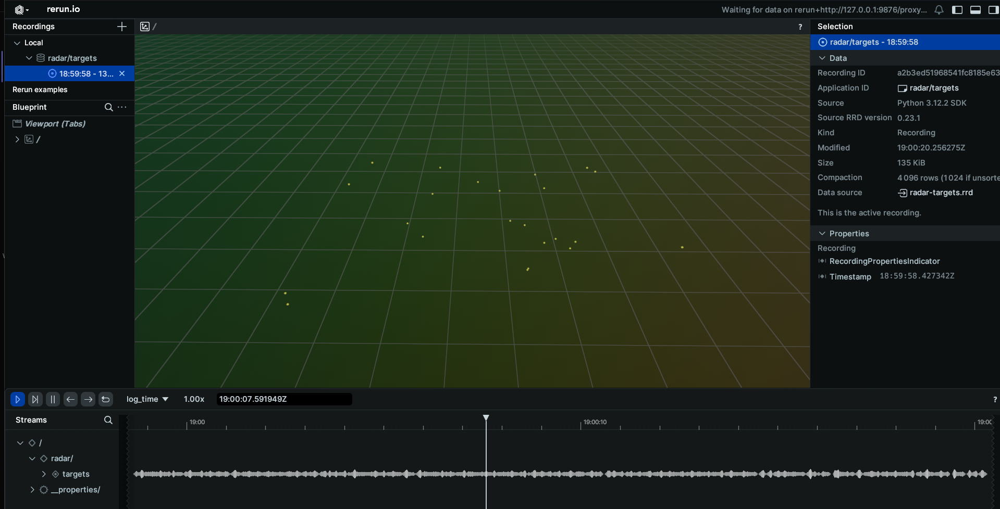
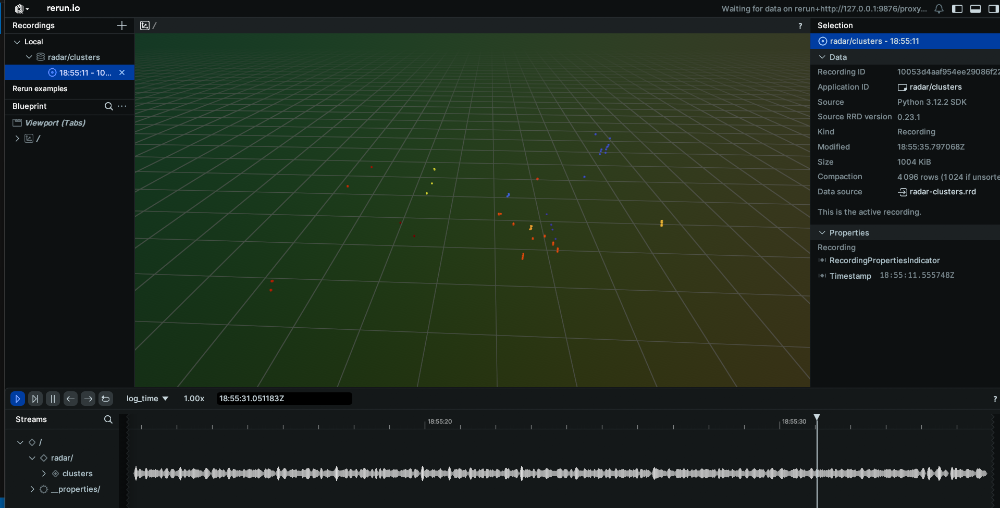
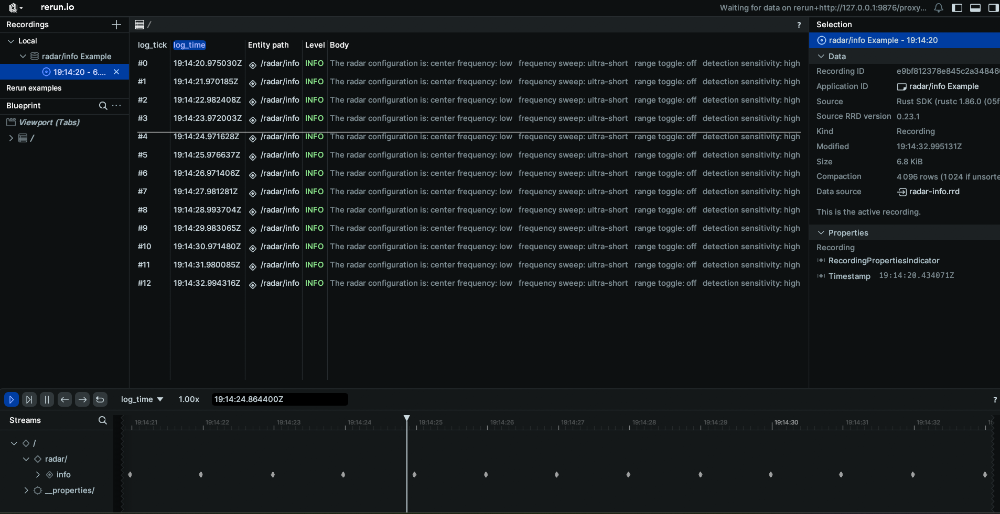
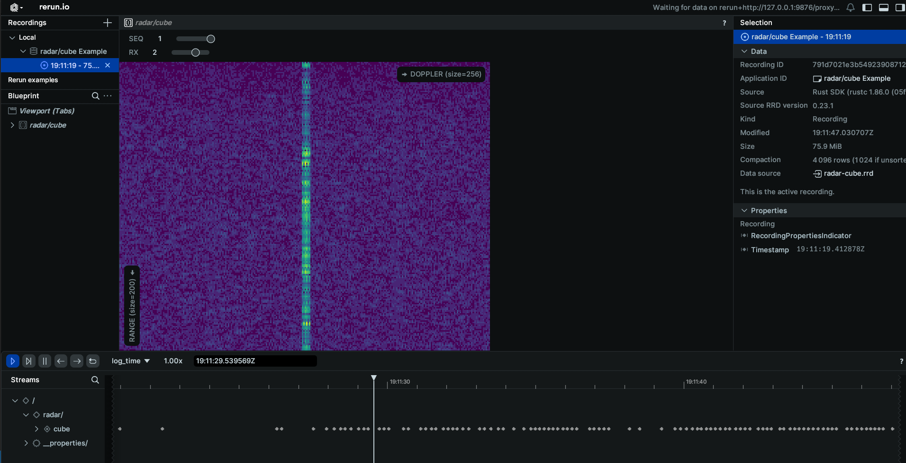
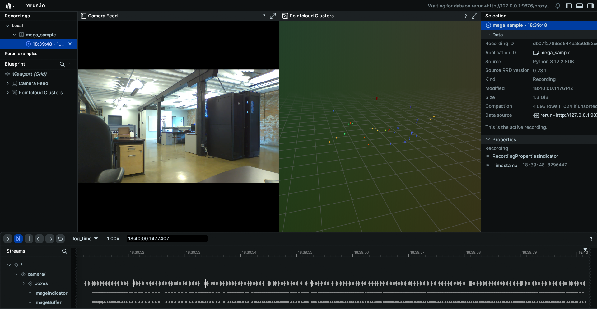

Radar Schema Example
This example will go through how to connect to the radar topic published on your EdgeFirst Platform and how to display the information on the command line as well as through the Rerun visualizer.
Radar Targets
Topic: /radar/targets
Message: PointCloud2
Sample Code: Python / Rust
Setting up subscriber
After setting up the Zenoh session, we will create a subscriber to the radar/targets topic
# Create a subscriber for "rt/radar/targets"
loop = asyncio.get_running_loop()
drain = MessageDrain(loop)
session.declare_subscriber('rt/radar/targets', drain.callback)
// Create a subscriber for "rt/radar/targets"
let subscriber = session
.declare_subscriber("rt/radar/targets")
.await
.unwrap();
Receive a message
We can now receive a message on the subscriber. After receiving the message, we will need to deserialize it.
async def targets_handler(drain):
while True:
msg = await drain.get_latest()
thread = threading.Thread(target=targets_worker, args=[msg])
thread.start()
while thread.is_alive():
await asyncio.sleep(0.001)
thread.join()
use edgefirst_schemas::sensor_msgs::PointCloud2;
// Create a subscriber for "rt/radar/cluster"
let msg = subscriber.recv().unwrap()
let pcd: PointCloud2 = cdr::deserialize(&msg.payload().to_bytes())?;
Decode PCD Data
The next step is to decode the PCD data. Please see examples/pcd for a guide on how to decode the PointCloud2 data.
def targets_worker(msg):
pcd = PointCloud2.deserialize(msg.payload.to_bytes())
points = decode_pcd(pcd)
pos = [[p.x, p.y, p.z] for p in points]
rr.log("radar/targets", rr.Points3D(pos))
let points = decode_pcd(&pcd);
let points = Points3D::new(
points
.iter()
.map(|p| Position3D::new(p.x as f32, p.y as f32, p.z as f32)),
);
rr.log("radar/targets", &points)?;
Process the Data
We can now process the data. In this example we will find the maximum and minimum values for x, y, z, speed, power, and rcs
pos = [[p.x, p.y, p.z] for p in points]
rr.log("radar/targets", rr.Points3D(pos))
let min_x = points.iter().map(|p| p.x).fold(f64::INFINITY, f64::min);
let max_x = points.iter().map(|p| p.x).fold(f64::NEG_INFINITY, f64::max);
let min_y = points.iter().map(|p| p.y).fold(f64::INFINITY, f64::min);
let max_y = points.iter().map(|p| p.y).fold(f64::NEG_INFINITY, f64::max);
let min_z = points.iter().map(|p| p.z).fold(f64::INFINITY, f64::min);
let max_z = points.iter().map(|p| p.z).fold(f64::NEG_INFINITY, f64::max);
let min_speed = points
.iter()
.map(|p| *p.fields.get("speed").unwrap())
.fold(f64::INFINITY, f64::min);
let max_speed = points
.iter()
.map(|p| *p.fields.get("speed").unwrap())
.fold(f64::NEG_INFINITY, f64::max);
let min_power = points
.iter()
.map(|p| *p.fields.get("power").unwrap())
.fold(f64::INFINITY, f64::min);
let max_power = points
.iter()
.map(|p| *p.fields.get("power").unwrap())
.fold(f64::NEG_INFINITY, f64::max);
let min_rcs = points
.iter()
.map(|p| *p.fields.get("rcs").unwrap())
.fold(f64::INFINITY, f64::min);
let max_rcs = points
.iter()
.map(|p| *p.fields.get("rcs").unwrap())
.fold(f64::NEG_INFINITY, f64::max);
Results
The command line output will appear as the following
Recieved 23 radar points. Values: x: [2.04, 9.48] y: [-2.99, 4.74] z: [-2.07, 2.09] rcs: [-13.80, 17.60]
Recieved 23 radar points. Values: x: [2.04, 9.47] y: [-2.99, 4.21] z: [-2.11, 2.09] rcs: [-13.80, 17.60]
Recieved 23 radar points. Values: x: [2.04, 9.47] y: [-2.97, 4.22] z: [-2.09, 2.07] rcs: [-14.00, 17.60]
When displaying the results through Rerun you will see the pointcloud radar data.

Radar Clusters
Topic: /radar/clusters
Message: PointCloud2
Sample Code: Python / Rust
Setting up subscriber
After setting up the Zenoh session, we will create a subscriber to the radar/clusters topic
# Create a subscriber for "rt/radar/cluster"
loop = asyncio.get_running_loop()
drain = MessageDrain(loop)
session.declare_subscriber('rt/radar/clusters', drain.callback)
// Create a subscriber for "rt/radar/cluster"
let subscriber = session
.declare_subscriber("rt/radar/clusters")
.await
.unwrap();
Receive a message
We can now receive a message on the subscriber. After receiving the message, we will need to deserialize it.
async def clusters_handler(drain):
while True:
msg = await drain.get_latest()
thread = threading.Thread(target=clusters_worker, args=[msg])
thread.start()
while thread.is_alive():
await asyncio.sleep(0.001)
thread.join()
use edgefirst_schemas::sensor_msgs::PointCloud2;
// Create a subscriber for "rt/radar/cluster"
let msg = subscriber.recv().unwrap()
let pcd: PointCloud2 = cdr::deserialize(&msg.payload().to_bytes())?;
Decode PCD Data
The next step is to decode the PCD data. Please see examples/pcd for a guide on how to decode the PointCloud2 data.
def clusters_worker(msg):
pcd = PointCloud2.deserialize(msg.payload.to_bytes())
points = decode_pcd(pcd)
let points = decode_pcd(pcd);
Collect the Clustered Points
We will now collect all the clustered points, which are all the points with cluster_id above 0.
clusters = [p for p in points if p.cluster_id > 0]
if not clusters:
rr.log("radar/clusters", rr.Points3D([], colors=[]))
return
max_id = max(p.cluster_id for p in clusters)
pos = [[p.x, p.y, p.z] for p in clusters]
colors = [colormap(turbo_colormap, p.cluster_id / max_id) for p in clusters]
rr.log("radar/clusters", rr.Points3D(pos, colors=colors))
let clustered_points: Vec<_> = points.iter().filter(|x| x.id > 0).collect();
let max_cluster_id = clustered_points
.iter()
.map(|x| x.id)
.max()
.unwrap_or(1)
.max(1);
let points = Points3D::new(
clustered_points
.iter()
.map(|p| Position3D::new(p.x as f32, p.y as f32, p.z as f32)),
)
.with_colors(clustered_points.iter().map(|p| {
let (r, g, b) = colorous::TURBO
.eval_continuous(p.id as f64 / max_cluster_id as f64)
.as_tuple();
Color::from_rgb(r, g, b)
}));
rr.log("radar/clusters", &points)?;
Results
When displaying the results through Rerun you will see the cluster data.

Radar Info
Topic: /radar/info
Message: RadarInfo
Sample Code: Python / Rust
Setting up subscriber
After setting up the Zenoh session, we will create a subscriber to the radar/info topic
# Create a subscriber for "rt/radar/info"
loop = asyncio.get_running_loop()
drain = MessageDrain(loop)
session.declare_subscriber('rt/radar/info', drain.callback)
// Create a subscriber for "rt/radar/info"
let subscriber = session
.declare_subscriber("rt/radar/info")
.await
.unwrap();
Receive a message
We can now receive a message on the subscriber. After receiving the message, we will need to deserialize it.
async def info_handler(drain):
while True:
msg = await drain.get_latest()
thread = threading.Thread(target=info_worker, args=[msg])
thread.start()
while thread.is_alive():
await asyncio.sleep(0.001)
thread.join()
use edgefirst_schemas::edgefirst_msgs::RadarInfo;
// receive a message
let msg = subscriber.recv().unwrap()
// Deserialize message
let radar_info: RadarInfo = cdr::deserialize(&msg.payload().to_bytes())?;
Process the Data
The RadarInfo message contains information about the radar configuration. Various fields can be accessed to view the radar's configuration.
def info_worker(msg):
radar_info = RadarInfo.deserialize(msg.payload.to_bytes())
radar_log = "Range Mode: %s\n" % str(radar_info.frequency_sweep)
radar_log += "Center Band: %s\n" % str(radar_info.center_frequency)
radar_log += "Sensitivity: %s\n" % str(radar_info.detection_sensitivity)
radar_log += "Range Toggle: %s\n" % str(radar_info.range_toggle)
rr.log("RadarInfo", rr.TextLog(radar_log))
// Access radar configuration
let center_frequency = radar_info.center_frequency;
let frequency_sweep = radar_info.frequency_sweep;
let range_toggle = radar_info.range_toggle;
let detection_sensitivity = radar_info.detection_sensitivity;
let cube = radar_info.cube;
Results
The command line output will appear as the following
The radar configuration is: center frequency: low frequency sweep: ultra-short range toggle: off detection sensitivity: high sending cube: true
The radar configuration is: center frequency: low frequency sweep: ultra-short range toggle: off detection sensitivity: high sending cube: true
The radar configuration is: center frequency: low frequency sweep: ultra-short range toggle: off detection sensitivity: high sending cube: true
When displaying the results through Rerun you will see a log of the radar configuration.

Radar Cube
Topic: /radar/cube
Message: RadarCube
Sample Code: Python / Rust
Setting up subscriber
After setting up the Zenoh session, we will create a subscriber to the radar/cube topic
# Create a subscriber for "rt/radar/cube"
loop = asyncio.get_running_loop()
drain = MessageDrain(loop)
session.declare_subscriber('rt/radar/cube', drain.callback)
// Create a subscriber for "rt/radar/cube"
let subscriber = session
.declare_subscriber("rt/radar/cube")
.await
.unwrap();
Receive a message
We can now receive a message on the subscriber. After receiving the message, we will need to deserialize it.
async def cube_handler(drain):
while True:
msg = await drain.get_latest()
thread = threading.Thread(target=cube_worker, args=[msg])
thread.start()
while thread.is_alive():
await asyncio.sleep(0.001)
thread.join()
use edgefirst_schemas::edgefirst_msgs::RadarCube;
// receive a message
let msg = subscriber.recv().unwrap()
// Deserialize message
let radar_cube: RadarCube = cdr::deserialize(&msg.payload().to_bytes())?;
Process the Data
The RadarCube message contains data from the RadarCube.
def cube_worker(msg):
radar_cube = RadarCube.deserialize(msg.payload.to_bytes())
data = np.array(radar_cube.cube).reshape(radar_cube.shape)
# Take the absolute value of the data to improve visualization.
data = np.abs(data)
rr.log("radar/cube",
rr.Tensor(data, dim_names=["SEQ", "RANGE", "RX", "DOPPLER"]))
let data = Array::<u16, _>::from_shape_vec(
radar.shape.iter().map(|&x| x as usize).collect::<Vec<_>>(),
radar
.cube
.iter()
.map(|x| x.unsigned_abs())
.collect::<Vec<_>>(),
)?;
let tensor = Tensor::try_from(data)?.with_dim_names(["SEQ", "RANGE", "RX", "DOPPLER"]);
rr.log("radar/cube", &tensor)?;
Results
The command line output will appear as the following
The radar cube has shape: [2, 200, 4, 256]
The radar cube has shape: [2, 200, 4, 256]
The radar cube has shape: [2, 200, 4, 256]
When displaying the results through Rerun you will see the radar cube displayed.

Combined Example
This example will demonstrate how to combine the camera feed with the radar messages to create a composite Rerun view. The main difference when using multiple messages in a script, is that we will change from waiting on the message to be received to having a callback function for when a message is received. Using the initial method, the script would hang while waiting for a message topic to be published, so if the messages are being published at different rates, the slowest message rate will limit the others.
Setting up the subscribers
After setting up the Zenoh session, we will create a subscriber to the three topics
loop = asyncio.get_running_loop()
h264_drain = MessageDrain(loop)
boxes2d_drain = MessageDrain(loop)
radar_drain = MessageDrain(loop)
frame_size_storage = FrameSize()
# Declare subscribers
session.declare_subscriber('rt/camera/h264', h264_drain.callback)
session.declare_subscriber('rt/model/boxes2d', boxes2d_drain.callback)
session.declare_subscriber('rt/radar/clusters', radar_drain.callback)
Subscriber Callbacks
We will now go through the handler functions that are in use for this example. These handler functions will independently handle each of the messages received through the MessageDrain. Additionally, we will make use of a FrameSize object to communicate the frame size of the camera to the boxes and segmentation mask so they can be resized appropriately.
await asyncio.gather(h264_handler(h264_drain, frame_size_storage),
boxes2d_handler(boxes_drain, frame_size_storage),
mask_handler(mask_drain, frame_size_storage, args.remote))
H264 Handler
The H264 handler will receive the CompressedVideo message from the MessageDrain and after initializing the required containers will pass that message to the worker, where the message will be processed and logged to Rerun.
async def h264_handler(drain, frame_storage):
raw_data = io.BytesIO()
container = av.open(raw_data, format='h264', mode='r')
while True:
msg = await drain.get_latest()
thread = threading.Thread(target=h264_worker, args=[msg, frame_storage, raw_data, container])
thread.start()
while thread.is_alive():
await asyncio.sleep(0.001)
thread.join()
def h264_worker(msg, frame_storage, raw_data, container):
raw_data.write(msg.payload.to_bytes())
raw_data.seek(0)
for packet in container.demux():
try:
if packet.size == 0:
continue
raw_data.seek(0)
raw_data.truncate(0)
for frame in packet.decode():
frame_array = frame.to_ndarray(format='rgb24')
frame_storage.set(frame_array.shape[1], frame_array.shape[0])
rr.log('/camera', rr.Image(frame_array))
except Exception:
continue
Boxes2D Handler
The Boxes2D callback will wait for a Detect message from the MessageDrain and will pass that message to the worker, where the message will be processed and logged to Rerun. The boxes logged will use tracking when available. Additionally, this handler will wait until the camera has started and logged a frame size so it knows what the height and width will be to resize the boxes.
async def boxes2d_handler(drain, frame_storage):
boxes_tracked = {}
_ = await frame_storage.get()
while True:
msg = await drain.get_latest()
frame_size = await frame_storage.get()
thread = threading.Thread(target=boxes2d_worker, args=[msg, boxes_tracked, frame_size])
thread.start()
while thread.is_alive():
await asyncio.sleep(0.001)
thread.join()
def boxes2d_worker(msg, boxes_tracked, frame_size):
detection = Detect.deserialize(msg.payload.to_bytes())
centers, sizes, labels, colors = [], [], [], []
for box in detection.boxes:
if box.track.id and box.track.id not in boxes_tracked:
boxes_tracked[box.track.id] = [box.label + ": " + box.track.id[:6], list(np.random.choice(range(256), size=3))]
if box.track.id:
colors.append(boxes_tracked[box.track.id][1])
labels.append(boxes_tracked[box.track.id][0])
else:
colors.append([0,255,0])
labels.append(box.label)
centers.append((int(box.center_x * frame_size[0]), int(box.center_y * frame_size[1])))
sizes.append((int(box.width * frame_size[0]), int(box.height * frame_size[1])))
rr.log("/camera/boxes", rr.Boxes2D(centers=centers, sizes=sizes, labels=labels, colors=colors))
Radar Handler
The radar callback will receive the pointcloud message, perform post-processing on the resultant data and then be sent to Rerun.
async def clusters_handler(drain):
while True:
msg = await drain.get_latest()
thread = threading.Thread(target=clusters_worker, args=[msg])
thread.start()
while thread.is_alive():
await asyncio.sleep(0.001)
thread.join()
def clusters_worker(msg):
pcd = PointCloud2.deserialize(msg.payload.to_bytes())
points = decode_pcd(pcd)
clusters = [p for p in points if p.cluster_id > 0]
if not clusters:
rr.log("/pointcloud/clusters", rr.Points3D([], colors=[]))
return
max_id = max(p.cluster_id for p in clusters)
pos = [[p.x, p.y, p.z] for p in clusters]
colors = [colormap(turbo_colormap, p.cluster_id / max_id)
for p in clusters]
rr.log("/pointcloud/clusters", rr.Points3D(pos, colors=colors))
Results
When displaying the results through Rerun you will see the combined image of the camera feed with boxes and the radar pointcloud.
